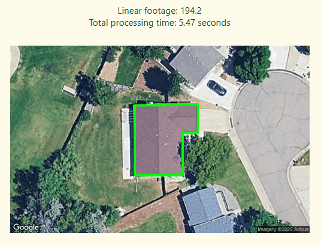
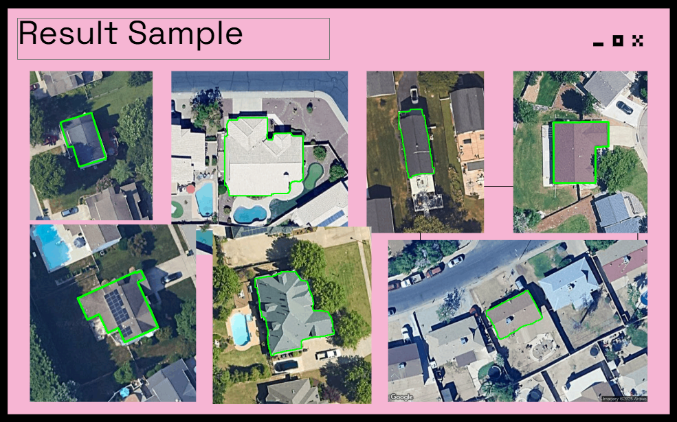

Capability Overview


Deploy advanced deep learning models for precise instance segmentation of roof structures from satellite/aerial imagery with pixel-level accuracy.
Enter any address and get accurate roof measurements in under 10 seconds through an intuitive web interface with visual segmentation overlays and precise area calculations.
Work seamlessly with street addresses, GPS coordinates, or direct map selection - compatible with any location worldwide where satellite imagery is available.
Download detailed measurement reports, segmentation masks, and georeferenced data in multiple formats for further analysis and documentation.
Business Value
🏠 Property Valuation & Assessment
Accurate roof area measurements support property appraisals, insurance assessments, and real estate transactions with professional-grade precision.
🔧 Construction & Solar Planning
Enable precise material estimation, project cost calculations, and solar panel capacity planning with exact roof surface area measurements.
💰 Time & Cost Optimization
Eliminate expensive site visits and manual measurements while reducing project risks and material waste - get results instantly at a fraction of traditional costs.
💼 Professional Efficiency
Replace time-consuming manual surveys with automated analysis, enabling faster project quotes and competitive advantage over traditional methods.
📊 Scalable Business Intelligence
Process multiple properties rapidly for portfolio assessment, bulk evaluation, and data-driven business decisions with reliable, automated workflows.
Ready to Start Your Satellite Analysis Project?
Let's discuss how satellite imagery analysis can provide insights for your specific use case.